Modo de Preparo
Duxelle (pasta de cogumelos)
- Pique muito bem ou processe os cogumelos. Pique os dentes de alho.
- Aqueça uma frigideira com um fio de azeite e uma colher (sopa) de manteiga.
Junte os cogumelos e o alho. Tempere com sal, pimenta moída na hora e
folhas de tomilho. - Refogue, mexendo de vez em quando, até secar toda a água dos cogumelos.
Adicione o uísque, espere evaporar por completo. A pasta deve ficar bem seca.
Transfira para uma vasilha e reserve na geladeira. Carne
- Seque o filé em temperatura ambiente com um papel-toalha e tempere toda
a superfície da carne com sal, pimenta-do-reino moída na hora e um fio de azeite. - Aqueça uma frigideira com um fio de óleo e uma colher (sopa) de manteiga, até
começar a sair fumaça. Com a frigideira bem quente, doure muito bem todos os
lados da carne, inclusive as laterais. - Transfira a carne para um prato e pincele imediatamente a mostarda por todos os lados.
Reserve. Finalização
- Abra um papel-filme um pouco maior que o tamanho da carne, deixando sobrar nas laterais.
Disponha sobre o filme as fatias de presunto cru lado a lado em duas fileiras, sobrepondo as fatias,
deixando sobrar um pouco nas laterais e no comprimento (em relação ao tamanho da carne). - Com uma espátula, ou as mãos, passe a pasta de cogumelos delicadamente sobre todo
o presunto, de maneira uniforme. - Posicione a carne resfriada no centro e delicadamente enrole, com ajuda do papel-filme,
até formar um pacote. Aperte ligeiramente ao enrolar para a carne firmar com o recheio.
Nesta hora, você definirá o formato da carne. Pressione bem o rolo com ajuda da lateral
do papel-filme. Deixe descansar na geladeira por, no mínimo, 40 minutos.
Pode ficar até o dia seguinte. - Abra a massa folhada com ajuda de um rolo sobre um papel-filme. A massa deve ficar
aproximadamente com meio centímetro de espessura. Ajuste o tamanho da massa em relação
ao tamanho da carne, deixando sobrar um pouco nas laterais.
Corte as pontas. - Retire com cuidado a carne do filme plástico, posicione na parte de baixo da massa,
deixando alguns centímetros de sobra. - Pincele as laterais da massa em volta da carne com a gema batida.
- Com ajuda do papel-filme, enrole a carne na massa (fazendo um pacote), pressionando levemente
para dentro, para a carne ficar firme na massa. Corte os excessos de massa (tente não sobrepor muita
massa, para um acabamento mais delicado). Com os dedos, feche as laterais da massa.
Leve à geladeira por, no mínimo, 1 hora. - Preaqueça o forno a 200°C.
- Coloque o rolinho em uma assadeira untada com azeite, com a emenda virada para baixo.
Pincele com a gema batida e, se quiser, faça desenhos na massa com a parte de trás de uma faca,
polvilhe flocos de flor de sal e folhinhas de tomilho. - Leve para assar por aproximadamente 30 minutos. Até a massa dourar.
- Retire a assadeira do forno, espere cerca de 10 minutos.
Em seguida, corte com delicadeza fatias de 1,5 cm e sirva.
Galeria top
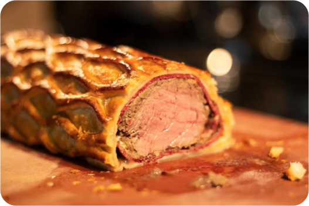 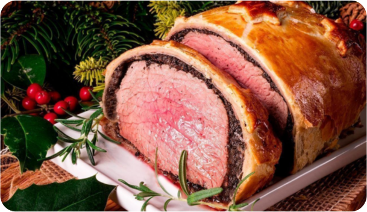 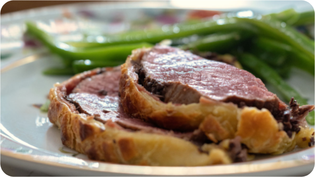 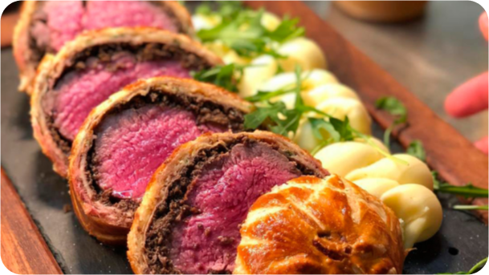 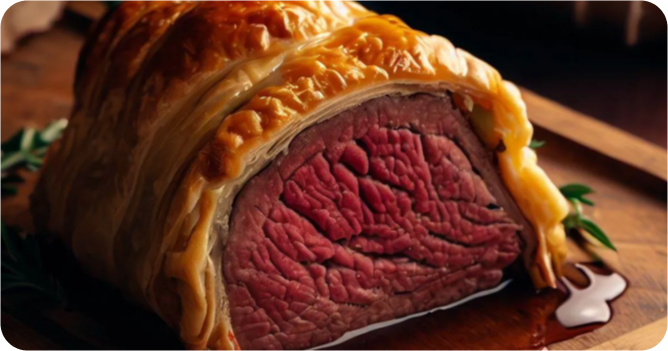 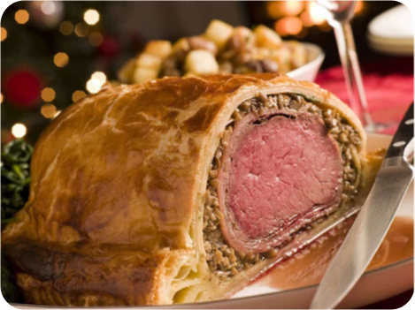 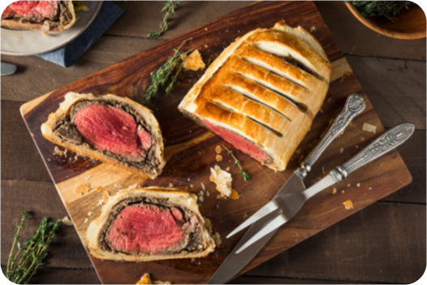{kind=link}
{kind=link}
{kind=link}
{kind=link}
{kind=link}
{kind=link}
{kind=link}
 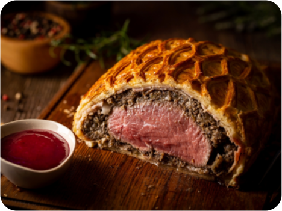
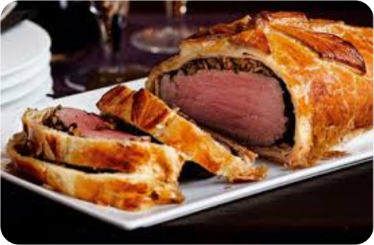
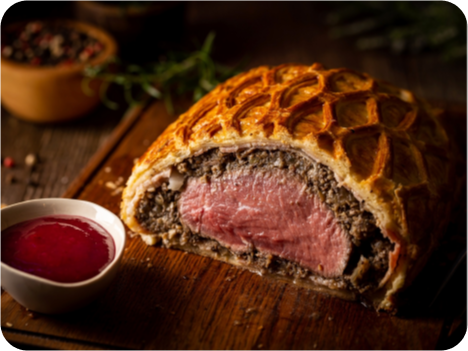
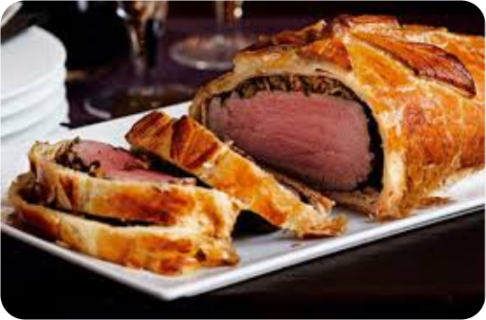
{kind=link}
{kind=link}